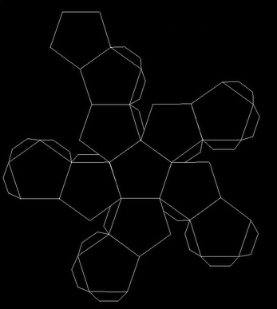
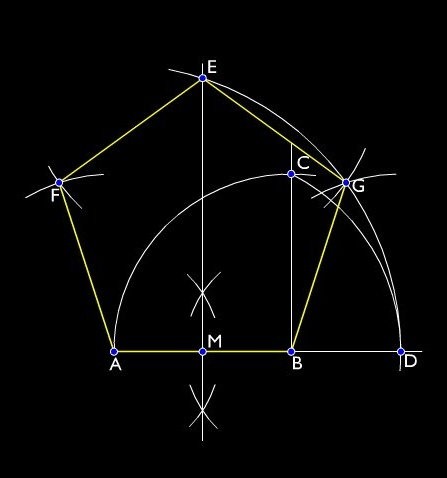

|
“Pero a vos... ¡os anhelo! ¡Os llamo entre las corrientes del tiempo!”
El ritual que se presenta a continuación se encuentra diseñado con el objetivo de un entendimiento más profundo de la naturaleza del tiempo, alentando en el mundo experiencias que puedan derrumbar las artificiosidades con las que uno construye habitualmente la percepción.
El problema del tiempo
La definición de “tiempo” ha eludido a los científicos, filósofos y religiosos que han pretendido definirlo dotando a este concepto de existencia independiente.
Estamos acostumbrados a una percepción lineal del tiempo que deriva del concepto judeocristiano que sustituyó a las concepciones cíclicas previas. El tiempo comienza así con el acto creador de Dios y finalizará en un apocalipsis que de cuando en cuando reviven algunas sectas religiosas de influencia cristiana, entre las que podríamos citar la eterna espera de los Testigos de Jehová y sus últimos días que se alargan ya demasiado, o el revuelo New Age en torno al 2012 que desterritorializó la concepción cíclica del tiempo maya y la encajó burdamente en la linealidad judeocristiana.
No merecería la pena detenerse en la influencia de los dogmas religiosos sobre nuestro concepto del tiempo, si no fuera por su importancia determinante en la configuración actual de nuestras mentes. Y es que independientemente del yugo de los dogmas religiosos, el individuo suele creer en la existencia de una flecha del tiempo que se desplaza en una dirección inapelable. Cuando fantaseamos en la ciencia ficción acerca del viaje en el tiempo, nuestro discurso desvela que asumimos el tiempo como una verdadera dimensión que pudiera recorrerse, en la cual nosotros nos desplazamos normalmente desde “atrás” hacia “adelante”.
Para Adolf Grünbaum, impulsor del Centro para la Filosofía de la Ciencia y profesor en la Universidad de Pittsburg, “El tiempo es lo que miden los relojes. Utilizamos el tiempo para situar eventos de manera secuencial, y utilizamos el tiempo para comparar cuánto duran los sucesos”. Siempre estamos en el mismo momento, un momento en el que las condiciones se encuentran en constante variación, ya que ni nosotros ni lo que nos rodea somos estáticos. Ante tal variación incesante en lo percibido buscamos formas útiles de estructurar el modo en que varían las imágenes de la percepción, y con este objetivo construimos el tiempo en nuestras mentes.
La posibilidad de ordenar e incluso determinar nosotros las imágenes de nuestra percepción a placer es dominio de la ciencia, de la magia, y más ampliamente, de la voluntad. La Naturaleza es contínua, no se siguen unas cosas a otras. Hacerla discreta y dividirla en pequeñas porciones para controlarla puede fortalecer nuestra Voluntad, pero lo que hay es mutación incesante, no existe sucesión de eventos como tal.
Las variaciones en lo percibido se constituyen en nuestra mente en tiempo ilusorio, mientras nosotros nos esforzamos por otorgarle un sentido al modo en que varían las imágenes de la percepción.
El tiempo es una tecnología que utilizamos para estructurar lo que percibimos, para así poder manejarlo y ser creadores de nuestras percepciones futuras. Pero no podemos dejar que nos condicione y nos use, nosotros no debemos estar en función del tiempo, sino el tiempo en función de nosotros. Aunque el tiempo sea una útil herramienta para predecir y determinar la forma en que se suceden los eventos, el problema surge cuando pasamos de manejar el tiempo como un utensilio a creer en el tiempo, y en consecuencia a permitir que sea usado por otros, y contra nosotros. Nos habituamos tanto a la presencia del tiempo que le proporcionamos una entidad propia y nos sometemos al concepto que hemos fabricado. Esto nos conduce a un lugar peligroso, en el que nos encontramos alienados, perdidos en el tiempo, olvidando que no hay más que este contínuo presente. La herramienta fuera de nuestro control, no es sino un grillete.
Esto se torna particularmente grave cuando nuestro sometimiento al tiempo ha contribuido a llevarnos hasta la “sociedad carcelaria” en la que vivimos y a la que apuntara el filósofo Michel Foucault. El rigor del tiempo religioso del monasterio medieval, explica magistralmente Foucault, se extendió a otros ámbitos estableciendo ritmos en el colegio, en el taller, en el hospital. El tiempo es construído como íntegramente útil, tiempo sin defectos, perfectamente medible, minucioso espejo ante el cual quien se apropia la producción refleja el rendimiento de los cuerpos forzados al trabajo. "El tiempo penetra el cuerpo, y con él todos los controles minuciosos del poder", indica el filósofo.
Tiempo y ritual
El ritual, afirma el filósofo anarcoprimitivista John Zerzan, es un mecanismo que pretende siempre traer al ser humano de vuelta a un primitivo lugar en el que no existe el tiempo. En su crítica es el uso en sí del símbolo el que provoca su futilidad, pues tiempo y símbolo se encuentran inevitablemente entretejidos.
Para el filósofo y psicoanalista Jacques Lacan, la experiencia del tiempo consiste en un efecto del lenguaje. El tiempo lineal a su vez ha secuestrado el instante atemporal “presente”, y el sujeto siempre se encuentra a destiempo con el objeto con el que interactúa, una hora antes, una hora después.
Componemos nuestra identidad mediante un conjunto de símbolos que nos dice quiénes somos, o más apropiadamente quiénes fuimos, para poder así planificar lo que seremos. Un yo que se despliega entre pasado y futuro, pisotea el instante con una incesante cháchara mental sobre sí mismo y sobre su destino.
¿Cómo escapar, pues, del sometimiento al tiempo?. El problema se revela más profundo, puesto que se encuentra entretejido con el entramado simbólico que sustenta la realidad del individuo, y con su propia concepción de sí mismo, ese “yo” ilusorio que habita todo lugar excepto aquel en el que el tiempo ha dejado de existir.
Esta deconstrucción del tiempo no puede entonces ser más que una batalla en una guerra que ha de ser librada en muchos frentes, y como tal hay que asumir la limitación de los efectos del ritual que se presenta a continuación. La ruptura del tiempo lineal puede caer en la futilidad ritual que denunciara Zerzan si el andamiaje simbólico de las realidades no se derrumba, si el sujeto no cuestiona las estructuras del mundo al que ha sido arrojado, si no se halla decidido a no dejar piedra sobre piedra en su afán.
El objetivo pues de este ritual, es la ruptura de la hipnosis del tiempo para atraer al mago a un instante ajeno al tiempo en el que la sucesión de percepciones y estados de consciencia se desligue del yugo del tiempo lineal, quizá mecido en un Viento que diluya los símbolos de regreso hacia un tiempo arquetípico, sucesión de eventos que ayude a desatar en lugar de a constreñir.
Materiales
Estos son los componentes para el ritual que aquí se desarrolla. Obviamente tanto aquí como en el resto del ritual nada es imprescindible, pero antes de desechar algo el mago haría bien en asegurarse de su comprensión del simbolismo involucrado.
- Incienso de ámbar
- Incienso de estoraque
- Incienso de mirra
- Un puñado de arena blanca
- Una cartulina blanca grande
- Un compás
- Un zafiro
- Un ópalo, a ser posible de Fuego
- Una cadena pequeña que no sea difícil de romper a martillazos
- Un martillo
1. Preliminares
En primer lugar, el mago se da un baño y purifica el templo con una varilla de incienso.
Se reunen los materiales.
Se abre el ritual llevando a cabo un destierro o lo que el mago acostumbre, considerando que en esta ocasión no está de más insistir. Por ejemplo, se puede realizar un LBRP (Lesser Banishing Ritual of the Pentagram, RMDP en castellano) seguido de un LRH (Lesser Ritual of the Hexagram, RMH en castellano).
2. Diseño de los pentágonos
Se enciende incienso de ámbar.
Un puñado de arena blanca es situada en el altar.
Se dibujan en una cartulina grande un conjunto de 12 pentágonos unidos por los laterales, como si formaran parte de un dodecaedro con sus caras extendidas. El aspecto final deberá ser similar a este:

El pentágono no debe dibujarse “a ojo”, sino del modo más exacto posible, utilizando alguna técnica proveniente del dibujo técnico. La exactitud en el dibujo y el esfuerzo del mago al realizarlo es importante. Nótese que esta parte del ritual puede utilizar una cantidad importante de tiempo: No importa.
A continuación un método apropiado para dibujar un pentágono, que el mago debiera practicar antes de realizar el ritual en sí:

Una vez terminado el dibujo en la cartulina, dentro de cada pentágono se pintará el símbolo de Mercurio y en letras mayúsculas el nombre de CRONOS
3. Invocación a Cronos
Se invoca a Mercurio y Cronos, y se les pide ayuda para encontrar la ruta apropiada a través de los caminos del pasado, jurando que no es la intención del mago crear caos y desorden entre las líneas no-rotas del tiempo. Jura por la eternidad y por los dioses del tiempo.
En primer lugar se llamará a Cronos rompiendo simbólicamente las cadenas que Helios le pusiera, para luego invocar a Hermes, que será el guía del mago a través del tiempo y evitará que se pierda.
Enciende el incienso de mirra y sostiene el zafiro en la mano.
A ti te invoco, al grande, al santo, al creador de la tierra toda, sobre quien sobrevino la injusticia por manos de su propio hijo, a quien Helios aprisionó con cadenas de acero para que el universo no entrara en confusión, hermafrodita, padre de la tempestad y el rayo, que dominas también a los que están debajo de la tierra, aie oi paidalis, phrenotechidö: stygardës: sankleon gerechrona, koirapsaï, kerideu, thalamnia, ochota, aneleï; ven, señor, dios, y háblame necesariamente de este asunto; pues yo soy el que fue apartado por ti, paidolis, mainolis, mainolieus.
Se rompen las cadenas con el martillo diciendo: ¡Oh Cronos! rompo dentro de este ritual las cadenas que te aprisionan y con las que Helios te ató.
Es mi voluntad caminar hacia atrás en el tiempo, y es mi voluntad conocer los secretos del tiempo mediante la experiencia directa. Juro por la Eternidad y por los mismos dioses del tiempo que no albergo ninguna intención de crear desorden entre las líneas intactas del tiempo. Por tanto, Oh exaltado Cronos, pido tu ayuda para que rotas las cadenas se abran las líneas del tiempo a mi paso, y así aumente mi entendimiento de los misterios del tiempo a través de mi aventura.
4. Invocación a Mercurio/Hermes
Enciende el incienso de estoraque y sostiene el ópalo en la mano.
Hermes, señor del universo, tú que estás en el corazón,
círculo de la luna, redondo y tetragonal, fundador de las palabras de la lengua,
defensor de la causa de la justicia, vestido con clámide,
calzado con alzadas sandalias, tú que haces girar el curso etéreo
hacia los abismos de la tierra, auriga del espíritu, ojo de Helios,
supremo, fundador de la lengua rica en sonidos,
tú que con lámparas alegras a los que están en la región subterránea
y a los mortales que han terminado su vida;
se te llama conocedor del destino con antelación
y divino Sueño que envía oráculos de día y de noche.
Tú curas todos los dolores de los mortales con tus divinos cuidados.
Aquí, bienaventurado, supremo hijo de Mnemes que cumple los pensamientos.
Muéstrate propicio para mí, [nombre del mago], para que te haga mío en tus oráculos que son tus poderes.
Te suplico, señor: sé propicio conmigo y luego de mostrarte a mí hazme saber lo que quiero sin engaño.”
“Gesennigadön Orto, Baubó, noëre kodëre soire soire sankanthara Eresquigal sankistë dödekakistë que muerde su cola kodëre Semea kenteu konteu kenteu kërideu darinkö lykynxynta kampychrë iriniton loumanata. ion komandron chreibacha noubacha noumillon erouphi tetrouphi libinou noumillon chandara ton pherphereu drouër marouër”. Este párrafo, empezando por “Gesennigadön”, debe pronunciarse tres veces
Es mi voluntad caminar hacia atrás en el tiempo, y es mi voluntad conocer los secretos del tiempo mediante la experiencia directa. Juro por la Eternidad y por los mismos dioses del tiempo que no albergo ninguna intención de crear desorden entre las líneas intactas del tiempo. Por tanto, Oh exaltado Mercurio, pido tu ayuda para ayudarme a encontrar el camino apropiado entre los senderos del tiempo, y que así caminando con seguridad bajo tus auspicios aumente mi entendimiento de sus misterios a través de mi aventura.
5. Activación del dodecaedro
El mago fabrica ahora un sígil auditivo a partir de la frase “Es mi voluntad viajar hacia atrás en el tiempo”, por ejemplo retirando las consonantes repetidas en la frase y reordenándolas:
esmivoluntadviajarhaciaatraseneltiempo => smvlntdvjrhctrsnltmp+aeiou => djhcp+aeiou => dajé hicoup
Toma la arena blanca del altar y pone una pizca sobre cada dodecaedro. Cada vez que deja caer arena sobre un dodecaedro, vibra el mantra, “dajé hicoup”.
A continuación, visualiza cómo los pentágonos cargados se conectan unos con otros y se alzan, formando un dodecaedro del tamaño de un hombre. Envuelven al mago como un portal negro, un portal al pasado.
6. Finalización
Se alza la espada. “Terminado este ritual, destierro a la cuarta dimensión.”
Y por último, se cierra el círculo del modo que el mago estime oportuno.
Leer más: Bibliografía y orígenes del ritual
- Papiros Mágicos Griegos (edición de Gredos), en particular para las invocaciones.
- KULT (magia del tiempo y del espacio)
- Vigilar y Castigar, de Michel Foucault.
- El Tiempo y sus Descontentos, de John Zerzan
|
 RSS
RSS